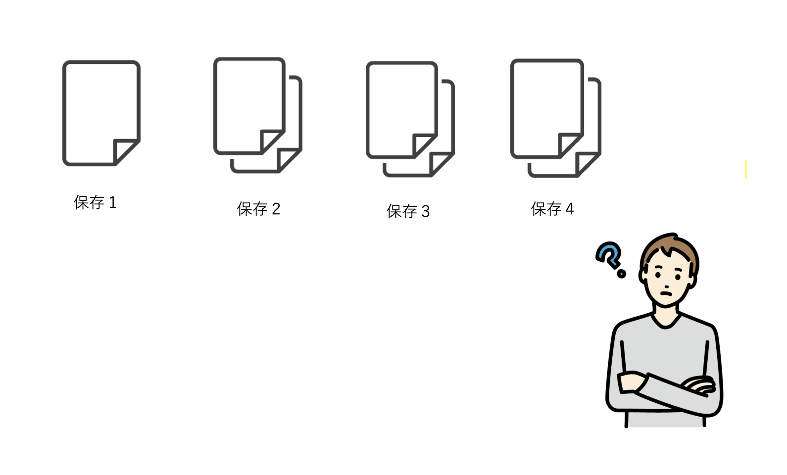
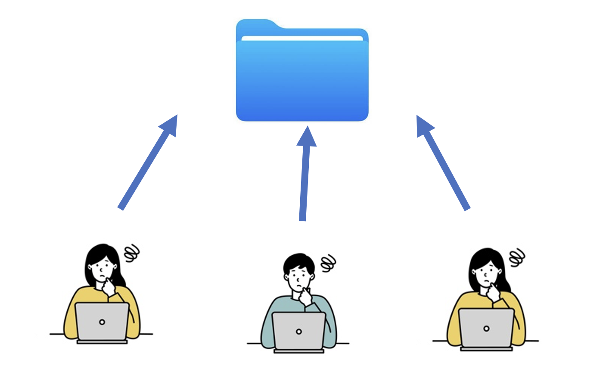
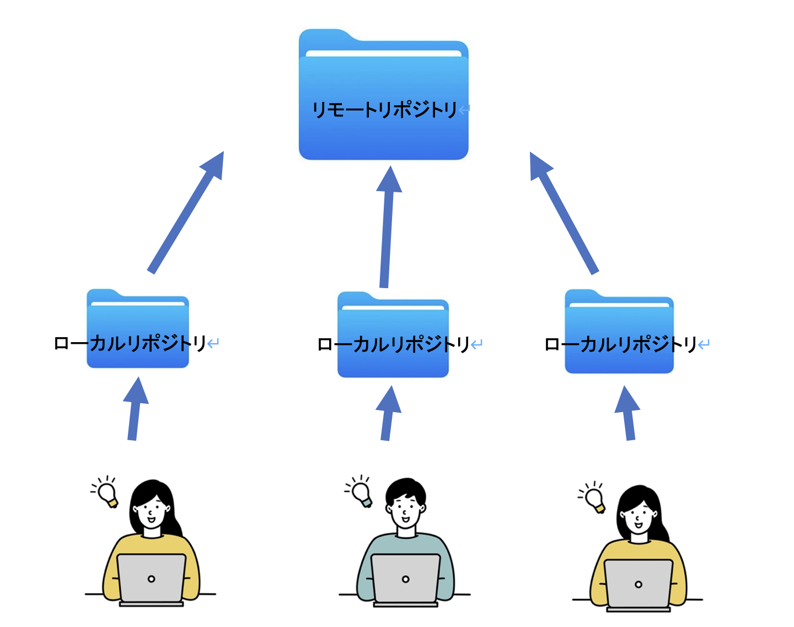
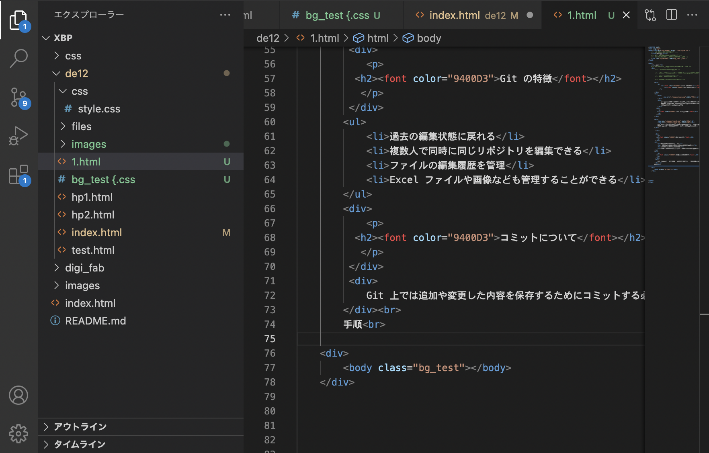
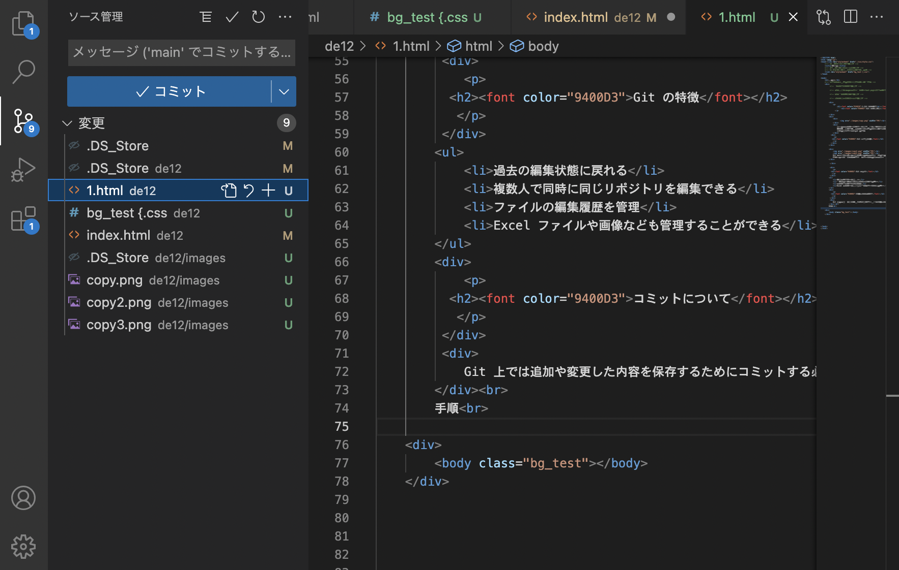
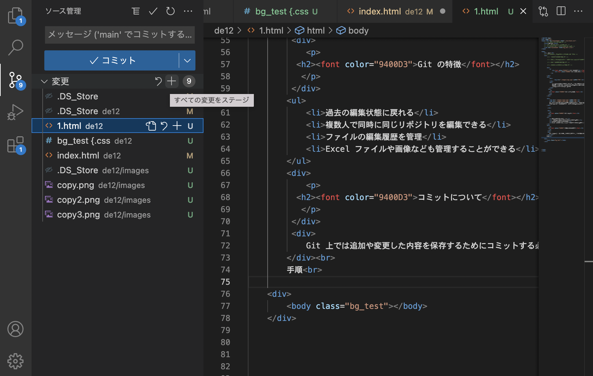
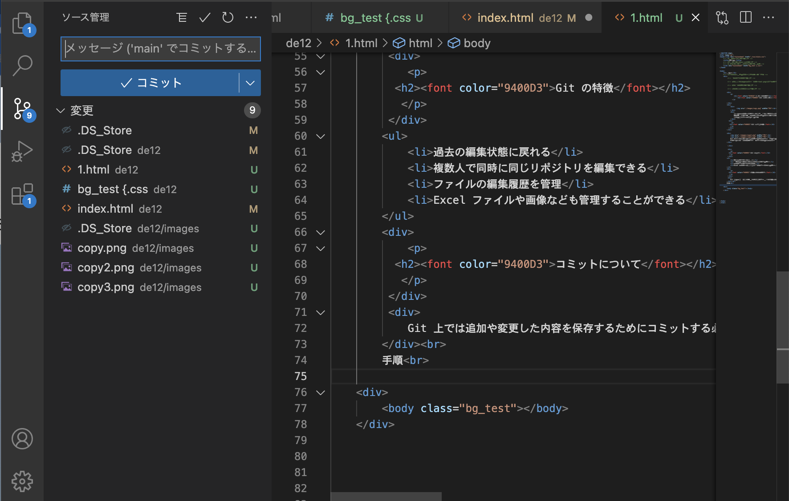
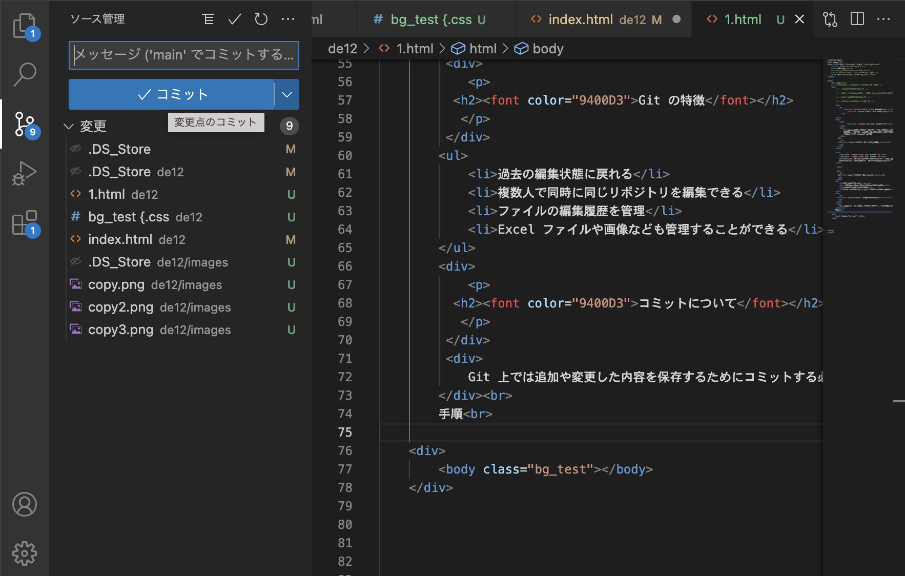
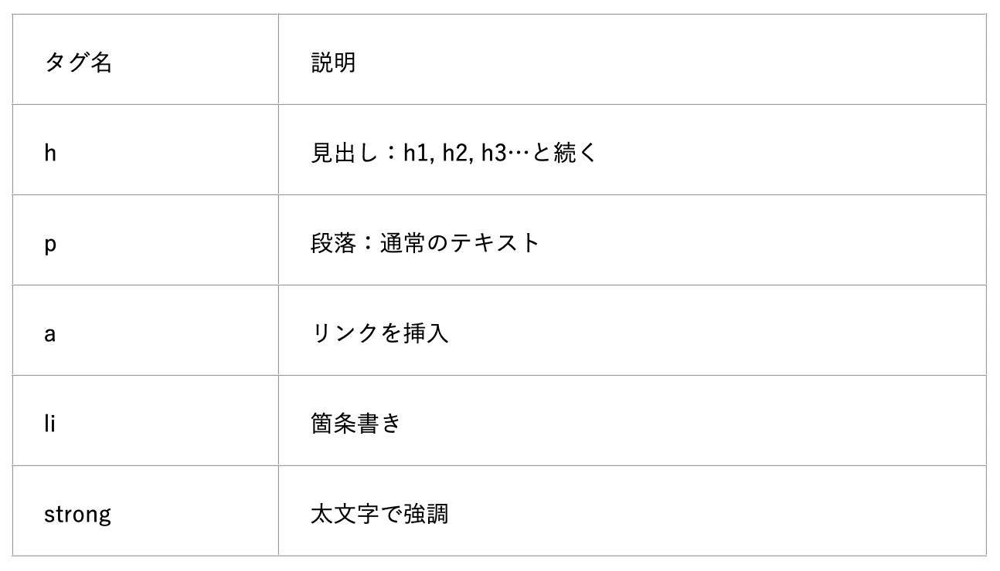

第１回

今まではファイルを編集前に戻すために随時コピーをとって、ファイル名に番号や編集した日付を追加しておくことがありました。
しかし毎回編集したファイルを自分でコピーしておくことは大変です。また、どのように編集されたかを確認することも安易ではありませんでした。
そこで登場するのがgit です。


Git は利用者がサーバー上にある１つのフォルダを共同で使うことをさけ、
分散型バージョン管理システムにすることで元のフォルダ(リモートリポジトリ)のコピー(ローカルリポジトリ)を作り編集することができるようにしました。
- 過去の編集状態に戻れる
- 複数人で同時に同じリポジトリを編集できる
- ファイルの編集履歴を管理
- Excel ファイルや画像なども管理することができる
Git 上では追加や変更した内容を保存するためにコミットする必要があります。通常のファイルであると上書き保存や名前をつけて保存することでデータが保存されますが、Git の場合リポジトリ内に変更したものを追加するにはコミットする必要があります。
手順(初期設定が終わっていることを前提に説明します。)
1.Visual Studio Code のリポジトリのフォルダを開きファイルを編集します。

2.次に[ソース管理]をクリックします。ここでは編集し変更したものが確認できます。

3.[変更]にカーソルを動かすと[+]が表示されます。ここで[＋]を押すと[すべての変更ステージ]されます。
ステージングとはシステムを反映させるという意味です。

4.その後上部の[メッセージ]にコミット時のメッセージを入力します。日付や名前を入力します。

5.最後に[コミット]をクリックします。これによって反映されます。

1.HTMLに関して
HTMLとは
HTMLとは「ハイパーテキスト・マークアップ・ランゲージ（Hyper Text Markup Language）」のことで、WEBページを作成するための言語です。主にページ内の情報を構造化し、見出し、本文、サイドバーなどを明確化する目的で使用します。また活用することで、コンピュータは様々な情報を読み込み、人が読むのに最適なWebページを表示しています。
HTMLでは要素を構成するためにタグを使用します。タグはHTMLで使用する文字に目印をつけることです。 要素は開始タグ(＜)・内容・終了タグ(＞)によって構成されています。＜h1＞や＜li＞などと打つことで区別されます。
ここにタグの一例を紹介します。
